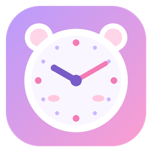

시간표를 불러오는 중…
00:00:00
현재 시각

쉬는시간 알리미숫자를 눌러 직접 입력할 수 있어요
메인 화면에서 포스트잇 오른쪽 아래 모서리를 끌면 크기를 마음대로 바꿀 수 있어요.
요일을 눌러 이 시정을 쓸 요일을 고르세요. 같은 시정인 요일은 한 번만 입력하면 돼요. 다른 시정에 있던 요일을 누르면 이쪽으로 옮겨 와요. 어느 시정에도 없는 요일에는 종이 울리지 않아요.
교시 시작·끝 시간을 넣으면 사이 시간은 자동으로 쉬는 시간이 돼요. 종류를 점심으로 바꾸면 종 없이 점심 시간으로 표시해요. ⠿를 끌거나 ▲▼로 순서를 옮길 수 있어요.
| 이름 | 종류 | 시작 | 끝 | 길이 | 다음 쉬는 시간 |
|---|
CSV 파일은 번호, 이름 순서예요. 세 번째 칸에 성별(남/여)을 넣으면 남·여 따로 뽑기도 할 수 있어요. 엑셀에서 “CSV(쉼표로 분리)”로 저장하면 돼요.
| 번호 | 이름 | 성별 |
|---|
컴퓨터를 끌 때는 설정과 창 위치가 자동 저장되고, 다시 켜면 그대로 실행돼요.